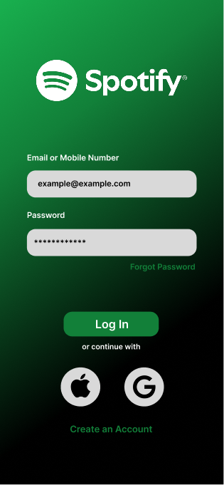
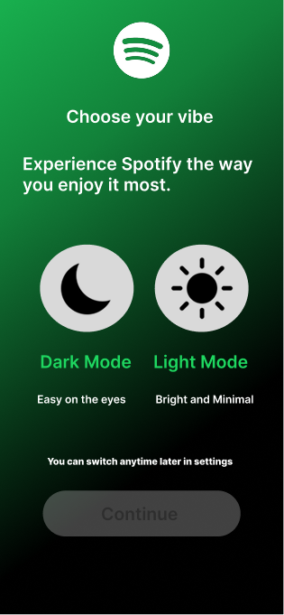
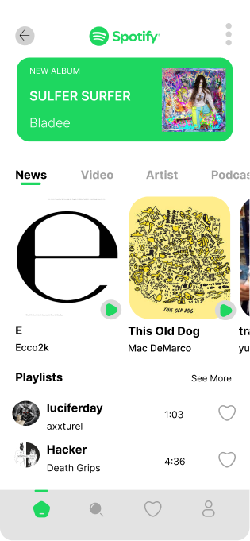
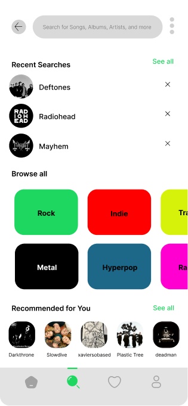

A clean light-mode redesign focused on simplicity and usability.
Spotify's search experience can feel overwhelming, especially for users looking to discover new music. The current interface relies heavily on category-based navigation, making it less intuitive to quickly find artists, genres, or playlists that match a user's interests.
Redesign Spotify's search experience to make music discovery faster, more intuitive, and visually engaging — while preserving Spotify's familiar design language.
This redesign was based on evaluating Spotify's existing search experience using UI/UX principles and personal observations. The focus was on identifying usability issues that could affect music discovery and navigation.
After defining the design goals, I created high-fidelity wireframes to refine the layout, establish a clear visual hierarchy, and design the complete user flow. These screens served as both the final interface design and the foundation for the interactive prototype.




The prototype was built using the high-fidelity wireframes to simulate the onboarding and music discovery experience. It demonstrates navigation, interactions, and the overall user flow of the redesign.
Working on this redesign gave me hands-on experience with designing a complete mobile interface in Figma. I improved my skills in creating consistent layouts, building interactive prototypes, and thinking about how users navigate an app. In future iterations, I would include user research and usability testing to make more informed design decisions.
Try the interactive prototype in Figma to click through the full redesigned flow yourself.
Test the prototype ↗